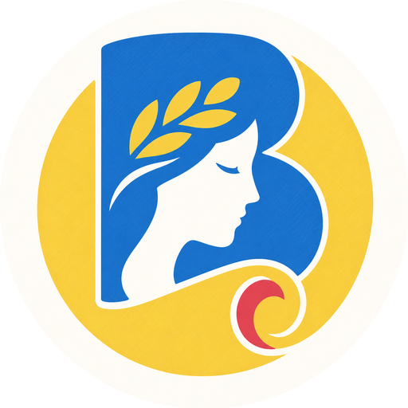

NEW BOOK · 编程教育编程启蒙：
编程启蒙：
思维与代码
从“会背语法”走向“会解决问题”，为零基础学习者建立完整的编程逻辑。
think first, code better ↗

一本写了三年多的书，
只为把第一步讲清楚。
内容在教学实践中持续修正，反复推敲表达与结构，让不同基础的读者都能循序渐进。
长期打磨 · 教学验证 · 引导式学习
slow is smooth, smooth is fast
A BOOK IN TWO PARTS
2
先建立看问题的方式，再把思维落实为可以运行的代码。
从理解，
走到实践。
上篇 · 思维何为编程思维、编程史、计算机如何理解世界、算法如何解决生活难题。
下篇 · 代码从 Python 在线环境、变量和数据类型，到判断、循环与函数。

这本书为什么值得学习？
01
长期打磨
三年有余反复推敲，让讲解更清晰、更自然。
craft02
教学修正
内容在真实教学中持续发现问题、解决问题。
tested03
引导式教学
重视理解过程和关键细节，真正为新手考虑。
guided04
体系结构
章节循序渐进，像搭积木一样夯实基础。
system05
原则优先
不只教易过时的经验，更关注持久的思维原则。
lasting学习编程，顺序比努力更重要。
01
思维逻辑
先理解问题、过程与因果，建立完整的认知框架。
›
02
电子笔记
可检索、可复用、可持续修正，把知识留在身边。
›
03
语法
在实践中熟悉，需要时能快速查到。
听懂了，为什么还是写不出来？
×
只记语法
把知识当成孤立的规则，遇到新问题时，不知道从哪里开始拆解。
✓
建立编程逻辑
理解输入、过程与输出；用已知知识一步步推导，形成自己的解决路径。
把“找答案”的过程，还给学习者。
01
提出问题
先明确自己真正想解决的是什么。
02
拆解路径
把复杂任务分成可以验证的小步骤。
03
动手实践
通过代码、练习与项目形成反馈。
04
复盘迁移
总结方法，让同一种思维解决新问题。

“
CODE IN THE AGE OF AI做大模型的主人，
而不是历史的旁观者。
人工智能越强，理解问题、组织上下文与判断结果的能力越重要。学习编程，是进入科技跃迁进程的一种方式。

书页之外，继续练习。
01
在线编程
codemark.bornforthis.cn/editor
02
代码分享
codemark.bornforthis.cn/sharecode
03
过程可视化
pythontutor.bornforthis.cn
04
书籍资源
bornforthis.cn/Books/
关注 AI悦创
获取书籍最新消息、后续资源与补充文章。

“
学习的根本意义，
是让你在未来遇到问题时，
想到更多可能性。
《编程启蒙：思维与代码》

黄家宝 · AI悦创